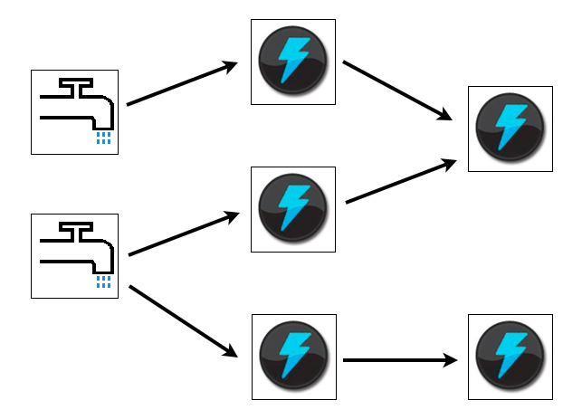
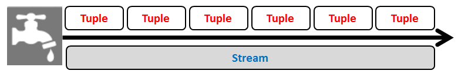
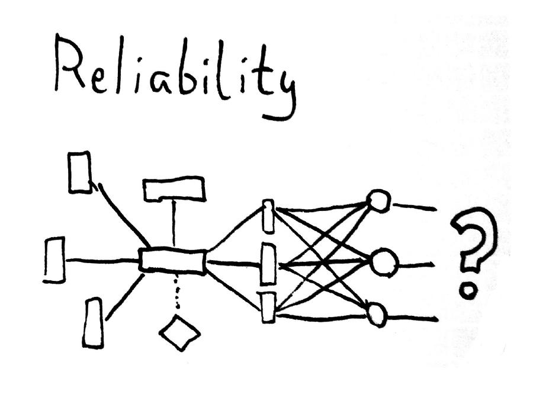
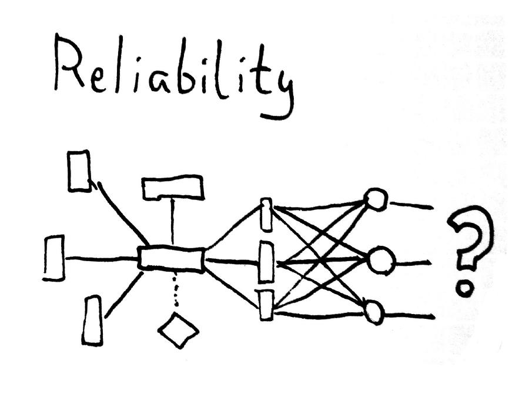

Storm + Jepsen
Introduction
Wojtek Gawronski (@afronski, afronski.pl) - 2014 © License: CC BY-ND 3.0 PL
Use Cases
- realtime analytics
- online machine learning
- continuous computation
- distributed RPC
- ETL
Topology

Stream

Spout

Bolt

 

Why Jepsen?
Thanks!
References: